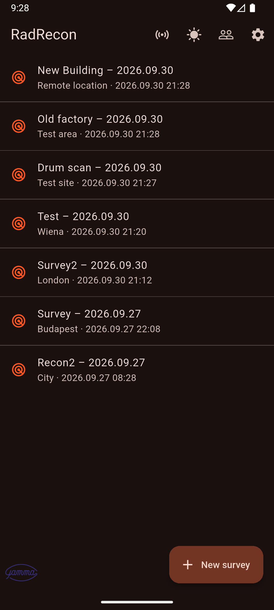
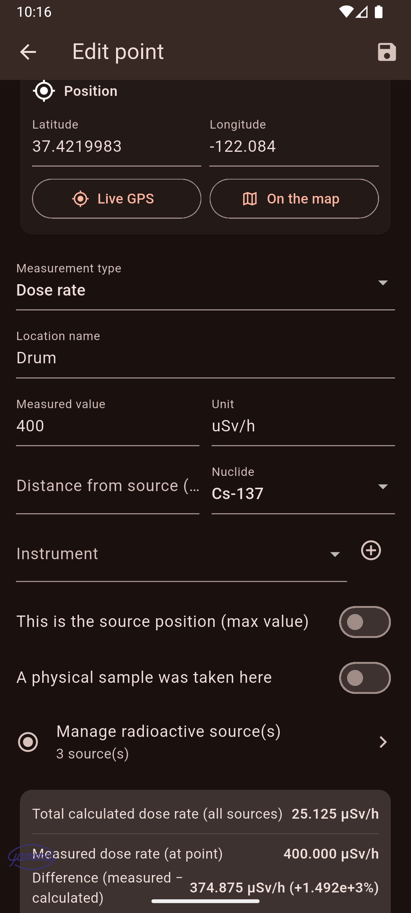
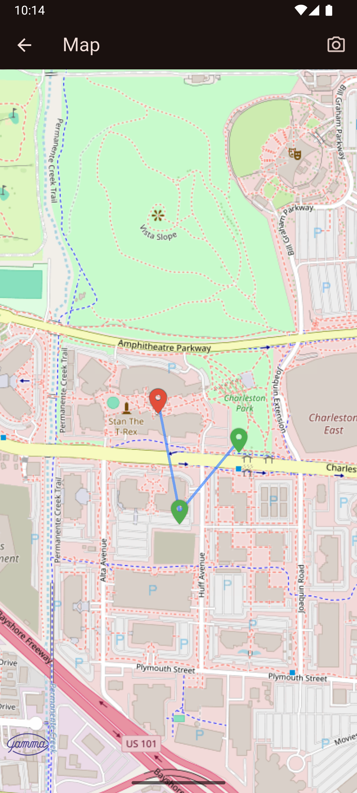
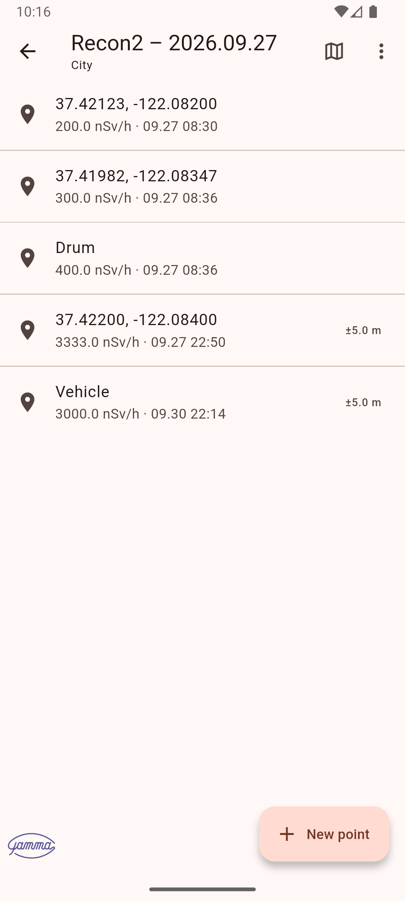

RadRecon transforme votre smartphone en outil de terrain complet pour les relevés de débit de dose gamma. Chaque point de mesure est enregistré en une seule étape avec sa position GPS, son horodatage, l’instrument et une photo, ce qui supprime la feuille de papier et la ressaisie dans un tableur.

Notez-vous encore vos mesures sur papier avant de les ressaisir dans un tableur après le relevé ?
Une valeur manuscrite a-t-elle déjà été mal lue lors de la rédaction du procès-verbal ?
Recopiez-vous les coordonnées GPS à la main, ou associez-vous les photos aux mesures depuis un dossier séparé ?
Passez-vous des heures après chaque relevé à assembler le procès-verbal Word ?
RadRecon est conçu pour que l’administration liée aux travaux exposant aux rayonnements soit précise, rapide et efficace, afin que les professionnels consacrent leur temps à la radioprotection plutôt qu’à la paperasse.
RadRecon est gratuit : pas de frais, pas d’abonnement, pas de compte.
Le code source est public sur GitHub sous la licence Apache 2.0 : libre d’utilisation, de modification et de redistribution, y compris à titre commercial, à condition de conserver les mentions de droit d’auteur et de licence. Nous cherchons des bénévoles pour les tests et le développement.
Les démarches administratives liées aux travaux exposant aux rayonnements doivent être suffisamment précises, prendre le moins de temps possible et être aussi efficaces que possible. C’est le seul objectif de cette initiative.
Remplacez feuilles de relevé, tableurs et dossiers de photos dispersés par un seul enregistrement structuré, créé sur place.
Chaque mesure reçoit sa position, le rayon de précision, l’heure, l’instrument, la valeur et l’unité, avec en option un libellé, une note et une photo.
Tous les points d’un relevé sur une même carte, pour voir les zones non couvertes et les points chauds avant même de quitter le site. Une image de la carte peut être enregistrée pour le procès-verbal.
Exportez un procès-verbal Word avec la liste des points, la carte et les photos, ou transmettez les données en JSON ou CSV pour les traiter ailleurs.
De la première mesure au procès-verbal final, en trois étapes.
Donnez-lui un nom et un lieu, puis affectez les personnes qui participent à la mesure.
Choisissez le type de mesure, saisissez la valeur ou lisez-la depuis un instrument connecté, et prenez la position GPS et une photo. Les seuils d’alerte vous avertissent immédiatement.
Vérifiez la carte, clôturez le relevé et exportez le procès-verbal. Les données peuvent passer en JSON vers une autre installation de RadRecon.
Les outils que vous porteriez autrement dans un carnet séparé, sur l’appareil même avec lequel vous enregistrez.
Retrouvez un point enregistré, ou gardez une distance et un cap fixes par rapport à une source, avec une flèche et une distance mises à jour en continu.
Convertit l’activité en débit de dose et inversement pour Co-60, Cs-137, Ir-192, Ra-226, I-131, Na-22 et Am-241, ou pour un nucléide saisi manuellement.
Une approche guidée vers une source, fondée sur le gradient des mesures déjà enregistrées.
Une bibliothèque d’instruments avec date et facteur d’étalonnage ; les valeurs des appareils accessibles en WiFi via Modbus/TCP sont lues directement dans le formulaire de saisie.
Enregistre des points depuis un instrument connecté en Modbus, selon un intervalle de temps ou de distance, pendant que vous marchez.
Suit les sources avec activité corrigée de la décroissance et compare le débit de dose calculé au débit mesuré. Rappels optionnels pour l’échéance de durée de vie, de contrôle, de visite médicale et de formation.
Les doses individuelles et les données des entreprises sont gérées dans la même application, séparées là où elles doivent l’être. Les doses affichées dans RadRecon aident à tenir vos registres et ne remplacent pas la dosimétrie individuelle officielle.
Collectez les doses par personne pendant le relevé : intégrées automatiquement depuis un détecteur Modbus connecté lors de l’enregistrement automatique, ou saisies à la main, et encore modifiables à la clôture du relevé.
Ajoutez les résultats de dosimétrie passive (lecture mensuelle ou bimestrielle) et consultez la dose annuelle de chacun, ventilée en en ligne, manuelle et passive. Les doses s’importent et s’exportent en CSV.
Si vous travaillez pour plusieurs entreprises, gardez les données de chacune séparées et passez de l’une à l’autre d’une simple pression. L’état en cours est sauvegardé automatiquement lors du changement, et une entreprise peut être transférée sur un nouveau téléphone à partir d’un fichier de sauvegarde.
Une interface claire, pensée pour un usage en extérieur sur téléphone, en thème clair ou sombre.



Le papier et les tableurs perdent de l’information entre le terrain et le procès-verbal. RadRecon comble cet écart.
L’enregistrement créé sur le terrain est celui qui va dans le procès-verbal : précis au GPS, horodaté et rattaché à un instrument.
Les modifications d’un point de mesure sont consignées. La valeur d’origine ne disparaît jamais sans laisser de trace.
Définissez un seuil par type de mesure et recevez un son et une fenêtre d’alerte dès qu’une valeur l’atteint ou le dépasse.
La saisie, les calculs et les procès-verbaux fonctionnent sur l’appareil. Seul le fond de carte nécessite une connexion internet.
Techniciens en physique de la santé qui réalisent des relevés de routine dans les installations.
Caractérisation de sites et relevés de démantèlement.
Évaluation radiologique nécessitant une saisie de données de terrain rapide et structurée.
Enseignement de la technique de relevé, où un enregistrement consigné et vérifiable compte autant que la mesure elle-même.
Non. La saisie, les calculs et l’export fonctionnent hors ligne. Le fond de carte est chargé depuis OpenStreetMap : les tuiles de la carte n’apparaissent donc qu’avec une connexion.
Non. Il n’y a ni inscription ni cloud. Vos données sont stockées sur votre appareil et ne le quittent que si vous les exportez ou les partagez.
N’importe lequel : vous pouvez saisir la valeur à la main. Les instruments accessibles en WiFi via Modbus/TCP peuvent aussi être lus directement dans le formulaire de saisie.
Les constantes gamma et les périodes radioactives sont des valeurs de référence. Vérifiez-les auprès d’une source faisant autorité avant de consigner un résultat dans un procès-verbal officiel.
Android, iPhone, Windows, macOS et Linux. L’application est disponible en anglais et en hongrois, et suit le thème clair, sombre ou système.
Non. L’enregistrement ne fonctionne que tant que son écran est ouvert. Si le téléphone se verrouille ou si vous changez d’application, il se met en pause et doit être relancé.
Exportez un procès-verbal Word avec photos, les points en CSV pour Excel, ou en JSON qu’une autre installation de RadRecon peut importer.
Oui. C’est une initiative citoyenne à but non lucratif : utilisation gratuite, sans compte ni abonnement. Le code source est public sur GitHub sous la licence Apache 2.0 (libre d’utilisation, de modification et de redistribution, y compris à titre commercial, avec conservation des mentions).
Non. Les doses collectées dans RadRecon (intégrées depuis un détecteur, saisies manuellement ou reprises de résultats de dosimétrie passive) aident à tenir vos registres. Les doses individuelles officielles proviennent de votre service de dosimétrie agréé, comparez les valeurs avec les siennes.
Oui. Chaque entreprise a ses propres données, et le sélecteur d’entreprise permet de passer de l’une à l’autre d’une simple pression. L’état en cours est sauvegardé automatiquement lors du changement.
Remplissez le formulaire d’inscription des bénévoles. Testeurs, développeurs, spécialistes de la radioprotection et traducteurs sont les bienvenus.
RadRecon recherche des bénévoles pour les tests et le développement. Que vous travailliez avec des rayonnements, écriviez du code ou parliez une langue que nous ne couvrons pas encore, vous êtes les bienvenus.
Essayez l’application sur le terrain et dites-nous ce qui plante, ce qui manque et ce qui est lent.
Contribuez au code Flutter/Dart : fonctionnalités, corrections, tests et documentation.
Confrontez les calculs, la terminologie et les flux de travail à la pratique quotidienne et à la réglementation.
L’application parle actuellement anglais et hongrois. Aidez-nous à l’ouvrir à d’autres langues.
Plutôt par e-mail ? info@radrecon.hu · GitHub
RadRecon est construit par des bénévoles. Toute personne qui teste, développe, relit ou traduit peut figurer ici, avec son entreprise ou son organisation si elle le souhaite. Merci !
La liste est encore vide. Soyez le premier ou la première !
Vous souhaitez figurer dans la liste ? Inscrivez-vous comme bénévole et dites-nous comment vous voulez apparaître.
Enregistrez, cartographiez et documentez votre prochain relevé avec RadRecon. Vos questions et retours sont les bienvenus à l’adresse info@radrecon.hu.